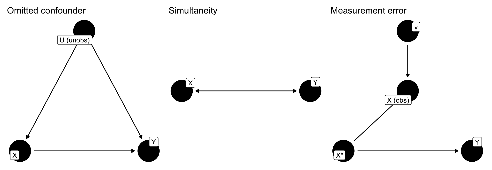
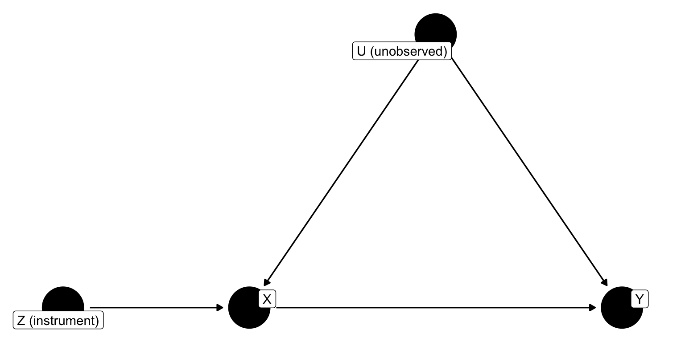
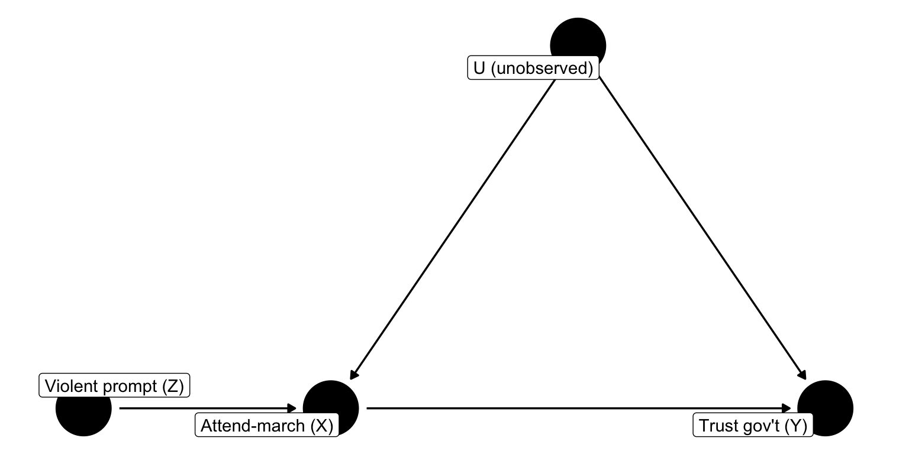
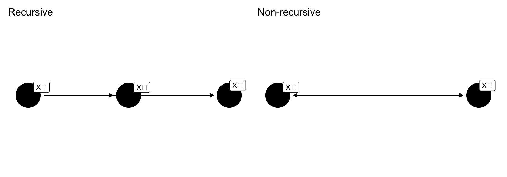

2SLS, Weak Instruments, and a Worked WSS 2020 Example
The assumption that pulls the rest together.
Exogeneity of \(X\): \(X\) is determined outside the model; it is uncorrelated with the error term.
In the DAG: no arrow points into \(X\) from anything in the model.
In algebra: \(\text{cov}(X, \epsilon) = 0\).
Endogenous is the opposite — \(X\) is determined inside the model, and the covariance with \(\epsilon\) is non-zero.
Several Gauss-Markov conditions collapse into exogeneity:
All three violations say the same thing: there is an open backdoor from \(X\) to the error.

Figure 1: Three ways exogeneity breaks: an omitted confounder, simultaneity, and measurement error in X.
In each case OLS sees only the muddled association. The coefficient is biased.
When adjustment sets run out.
If the confounder \(U\) is unobserved, no adjustment set blocks the backdoor.
adjustmentSets() returns empty. OLS is stuck.
Enter the instrumental variable: an exogenous nudge on \(X\) that cannot reach \(Y\) except through \(X\).

Figure 2: A valid instrument Z: relevance (Z → X) and exclusion (no direct Z → Y and no Z ↔︎ U).
Relevance is testable (first-stage F). Exclusion is not — you argue it on theory.
If both hold, the variation in \(X\) induced by \(Z\) is exogenous. That variation is clean.
\[ y_i = b_0 + b_1 x_i + e_{1i}, \qquad x_i = a_0 + a_1 z_i + e_{2i}. \]
Stage 1. Regress \(X\) on \(Z\) (and other exogenous controls). Keep \(\hat{x}\).
Stage 2. Regress \(Y\) on \(\hat{x}\).
\(\hat{x}\) is the part of \(X\) driven by the instrument — the clean variation. Using it in stage 2 purges the correlation with \(U\).
Do not actually run two separate lm() calls — the standard errors will be wrong. Use AER::ivreg().
When can 2SLS even be estimated?
Outcome equation with endogenous \(x_2\) and exogenous controls \(z_1, z_2\):
\[y = \beta_1 x_2 + \gamma_1 z_1 + \gamma_2 z_2 + \epsilon_1.\]
If the first stage uses only \(z_1, z_2\), then
\[\hat{x}_2 = \hat\pi_1 z_1 + \hat\pi_2 z_2\]
is a linear combination of variables already in the outcome equation. \(X^T X\) is singular. Not identified.
Add an excluded instrument \(z_3\) that appears in the first stage but not the outcome equation:
\[x_2 = \pi_1 z_1 + \pi_2 z_2 + \pi_3 z_3 + \epsilon_2.\]
Now \(\hat{x}_2\) contains a piece (\(\hat\pi_3 z_3\)) that is not spanned by the second-stage regressors.
Order condition: at least one instrument must appear in the first stage but not the second. One per endogenous regressor.
Stack the regressors into \(\hat{W} = [\,\hat{X}\ \ Z\,]\), where
\[\hat{\boldsymbol{\beta}}_{2SLS} = (\hat{W}^T \hat{W})^{-1} \hat{W}^T \mathbf{y}.\]
Variance is \(\sigma^2 (\hat{W}^T \hat{W})^{-1}\), where \(\sigma^2\) is computed from residuals using the original \(X\), not \(\hat{X}\). Manual two-step regressions miss this correction; ivreg() does it automatically.
Is 2SLS even needed?
Under exogeneity:
So if \(X\) really is exogenous, 2SLS costs precision for no gain. If \(X\) is endogenous, OLS is wrong and 2SLS is necessary.
We want a test.
A distinction that matters here:
OLS (under Gauss-Markov) is both.
2SLS is consistent but biased in finite samples. First-stage noise correlates with second-stage error; bias shrinks as \(n\) grows but is non-trivial in small samples.
Save first-stage residuals \(\hat{\delta}\) and include them in the outcome equation:
\[y = \beta_1 x_1 + \beta_2 \hat{\delta} + \gamma_1 z_1 + \gamma_2 z_2 + \epsilon.\]
If \(\hat\beta_2 \neq 0\), the part of \(x_1\) not explained by the instruments is correlated with the outcome’s error — i.e., \(x_1\) is endogenous.
Compare the two coefficient vectors directly:
\[H = (\hat\beta_c - \hat\beta_e)^T (V_c - V_e)^{-1} (\hat\beta_c - \hat\beta_e),\]
distributed \(\chi^2\) with df equal to the number of compared coefficients.
ivreg(..., diagnostics = TRUE) reports the Wu-Hausman version by default.
A valid instrument may still be weak — \(Z\) explains very little variation in \(X\).
Rough diagnostic: first-stage \(F\) on the excluded instruments. A rule of thumb is \(F > 10\); more recent work pushes that threshold higher.
Weak instruments are bad even when valid: 2SLS estimates become noisy, finite-sample bias grows, and \(\hat{x}\) collapses back into the other regressors (collinearity in the second stage).
A randomized instrument in the wild.
Does endorsing political protest affect trust in government?
People who endorse protest differ on many unobservables — prior distrust, political engagement, ideology. attend_march is almost surely endogenous.
The WSS 2020 randomized respondents to one of two versions of the protest question:
Treated respondents endorse attending a march at lower rates — relevance.
Assignment is random — exogeneity of \(Z\) is by design, not by argument.

Figure 3: Randomized Z → X → Y. U confounds X–Y; randomization ensures no arrow into Z.
Exclusion restriction: the wording manipulation affects trust only through its effect on stated march endorsement.
This is what we’d report if we ignored the endogeneity problem. It mixes the causal effect with whatever is in \(U\).
Checks relevance: does the randomized prompt move attend_march? The coefficient and the F-statistic both speak to this.
ivregThe diagnostics block reports three tests:
Three things almost always happen:
When endogeneity becomes structural.
Two variables that move together:
\[ x_2 = b_{00} + b_{01} x_1 + e_1 \]
\[ x_1 = b_{10} + b_{11} x_2 + e_2 \]
Both endogenous. \(\text{cov}(x_1, e_1) \neq 0\) and \(\text{cov}(x_2, e_2) \neq 0\). OLS biased on both.
The system is not identified without more information.
Add an exogenous variable unique to each equation:
\[ x_2 = b_{00} + b_{01} x_1 + \gamma_1 z_1 + e_1, \qquad x_1 = b_{10} + b_{11} x_2 + \gamma_2 z_2 + e_2. \]
Rule: each equation in a simultaneous system needs at least one instrument excluded from it but present in the equation that generates the endogenous RHS variable.

Figure 4: Recursive (left): ordered, no feedback. Non-recursive (right): X₁ ↔︎ X₂ — OLS biased; instruments required.
Substituting the \(x_1\) equation into the \(x_2\) equation:
\[ x_2 = \omega^{*} z_1 + \omega_3 z_2 + e^{*}_1, \qquad \omega^{*} = \omega_2 + b_{11}\omega_1. \]
\(\omega^{*}\) is the total effect of \(z_1\) on \(x_2\): direct (\(\omega_2\)) plus indirect through \(x_1\) (\(b_{11}\omega_1\)).
This is specification bias from POL 682, now turned into a tool: a correctly-specified recursive system lets us decompose total effects.
Why IV is harder than it looks.
Most candidate instruments fail at least one check. Randomization, natural experiments, and institutional quirks are the usual suspects.
ivreg Syntax Recap|: the outcome equation (endogenous + exogenous controls).|: the full set of exogenous regressors (instruments and included controls that are exogenous).Exogenous controls appear on both sides of the |.
POL 682 | Exogeneity & IV